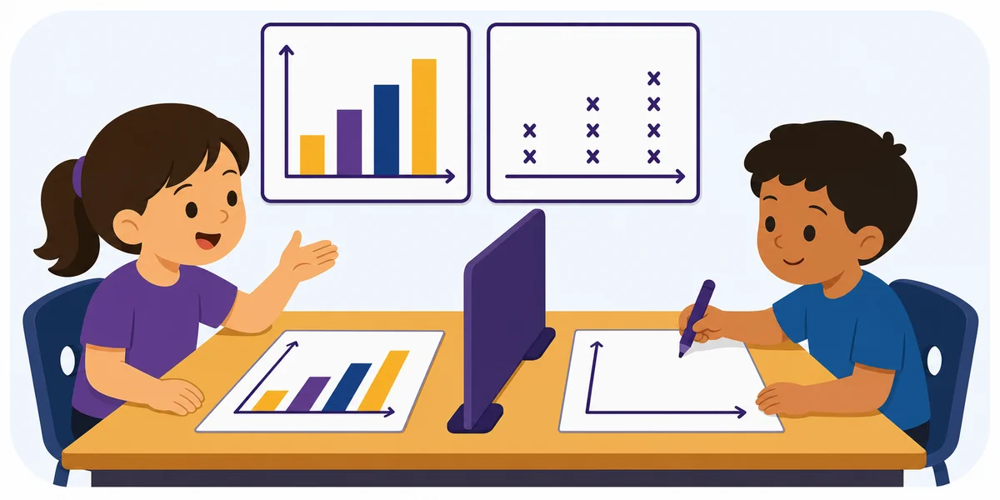

Activity 76 · Mathematics
Data-Display Replication

Materials Blank graphs and a completed graph.
What to describe
One student describes a bar graph, line plot, or pictograph. The partner reconstructs it. ---
Roles
How a round works
Make it harder or easier
Harder
Require coordinates, units, and exact quantities; describe in one uninterrupted turn with no questions.
Easier
Allow yes/no questions and provide a labeled grid or number line as a shared reference.
Reflect
Skills
Standards & alignment
TEKS Math TEKS · geometry, spatial reasoning & precise mathematical communication (confirm grade code)
NGSS NGSS SEP-8: Obtaining, Evaluating & Communicating Information · SEP-2: Developing & Using Models